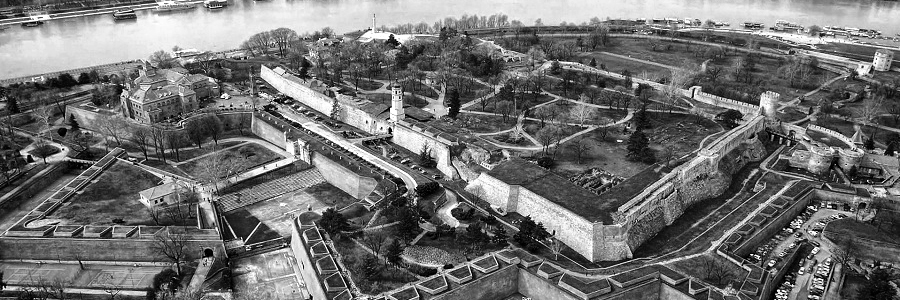
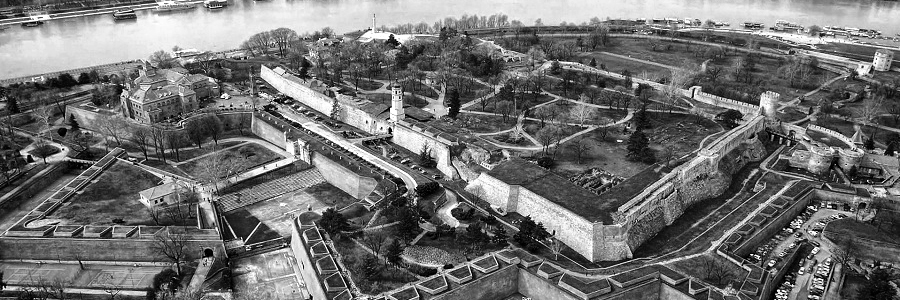

Заборављени
Београд
Средњевековни српски Београд
Српска владавина Београдом почиње 1284. године, када српски краљ Драгутин, као зет и вазал мађарског краља Ладислава IV, добија на управу Мачву са Београдом. То је био период интензивног насељавања српског живља и јачања утицаја Српске православне цркве. Ту је краљ Драгутин имао свој двор. Новосаграђена Саборна црква, била је оличење снаге и богатства младе српске државе. На Сабору у Дежеву 1282. године, Краљ Драгутин уступа престо свом брату Милутину, који кратко време влада Београдом, јер град, 1319. године, освајају и до темеља руше Мађари. Порушени и запустели град постаје погранична база угарском одупирању ширењу српске државе са југа, у време цара Душана. У таквом стању Београд дочекује XV век, када на историјску сцену Европе ступају Турци, нова велика освајачка сила.
У жељи да се што спремније одупру турској најезди и на Сави и Дунаву имају јако упориште, Мађари дозвољавају изградњу Београда за време деспота Стефана Лазаревића. Он је Београдом владао од 1403. до 1427. године, и то је време правог процвата града. Београд је не само престоница српске државе, већ и најважнији привредни, културни и верски центар. Граде се: Митрополитска црква, нова тврђава (цитадела), Деспотов дворац, болница и библиотека. Трговци добијају повластице и долазе богати и способни људи, који доприносе просперитету града. Претпоставља се да је град тада могао бројати 40-50 хиљада житеља.
Деспотов наследник Ђурађ Бранковић, био је принуђен да град преда Мађарима, а он по угледу на Београдску, подиже Смедеревску тврђаву. У време стогодишње угарске владавине измењена је целокупна структура становништва и изглед самог града. Град почиње нагло да стагнира, потиснуто српско становништво живело је у предграђу и њему није био доступан Горњи град. Угарски краљ Сигисмунд све више насељава мађарско становништво и шири утицај католичке цркве.

{kind=link}
{kind=link}
{kind=link}